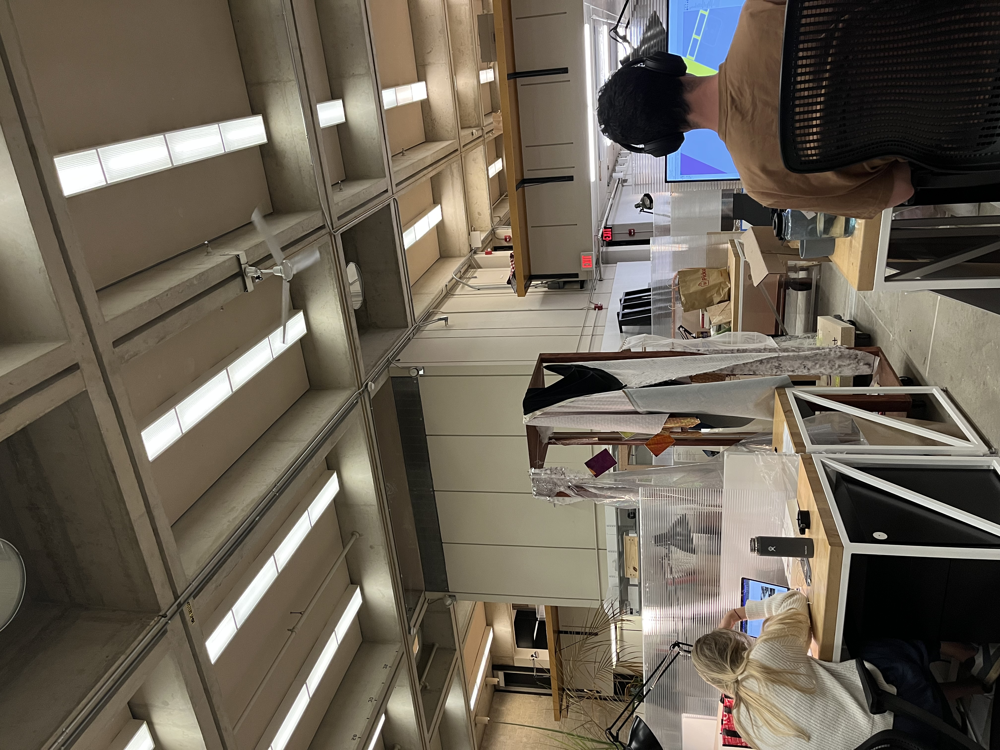

Production and Consumption in Unity

fellow students working on school assignments.

the materials this reading response addresses.
fellow students working on school assignments.
the materials this reading response addresses.
In Doss’s essay, the author writes that “iconography of labor presented in much American art of the 1930s often upheld status quo patterns of corporate management and control, rather than proposing a radical critique of the meaning of work and the relationships between workers and management,” as a primary conclusion in the study of the representations of labor in the Wolfsonian collections (Doss, 55). While the grand scope of this conclusion deserves criticality in the face of the author’s limited archive, the understanding that images of labor often uphold status quo patterns has been repeatedly seen in this course. If we hope that images might propose “a radical critique of the meaning of work and the relationships between workers and management,” how might that happen? Meredith TenHoor suggests such critiques are possible within architectural realms if we “examine both our own working conditions and our complicity in making those of building laborers intolerable,” pointing to the lack of representation in architectural diagrams and in the infrastructural food projects of 1960s France (TenHoor, 141). She suggests that “in our drawings and designs, we might tend more specifically and carefully to the working conditions of both rural laborers and cheese producers, rather than removing labor entirely from our diagrams in the name of ecology or efficiency” (TenHoor, 141). Yet, if Khor’s approach to labor teaches us anything, it teaches us that not only should the labor of building laborers be included in these drawings and sketches, but also the labor of the design laborer should be included. If images of labor can include the labor of that who imaged the labor, then we might begin the radically question a central veil within capitalist ideology: the separation of consumption and production, consumers and laborers. As Marx writes in the Grundrisse, every act of production is an act of consumption and vice-versa, “the immediate unity in which production coincides with consumption and consumption with production leave their immediate duality in tact.” If images of labor can help us imagine new forms of labor, then the explicit acknowledgement of these images as the products of labor seems to be a good place to start deconstructing capitalist ideologies and the status quo.